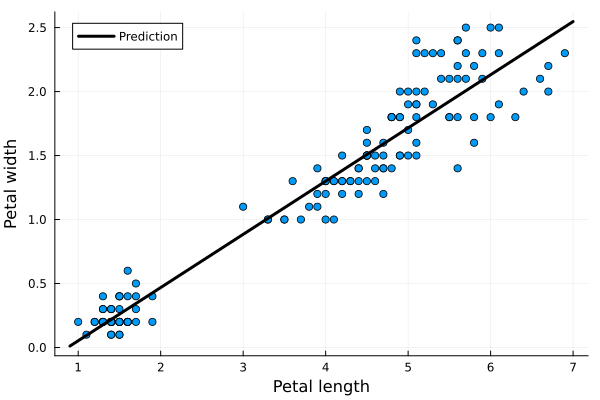

Linear regression
We start with linear regression, where the labels are continuous variables.
Theory of linear regression
Linear regression uses the linear prediction function $\operatorname{predict}(w;x) = w^\top x$ and the loss function $\operatorname{loss}(y, \hat y) = (y - \hat y)^2$. When we have a dataset with $n$ data points (samples) $x_i$ and labels $y_i$, linear regression may be written as the following optimization problem:
\[\operatorname{minimize}_w\qquad \frac 1n\sum_{i=1}^n (w^\top x_i - y_i)^2.\]
The objective function is minimal if the predictions $w^\top x_i$ are equal to the labels $y_i$ for all samples $i=1,\dots,n$.
Some algorithms use the sum instead of the mean in the objective function. These approaches are equivalent. For the former case, it is simpler to work in the matrix notation, where we form a matrix $X$ whose rows are the samples $x_i$. It is not difficult to show that the previous problem is equivalent to
\[\operatorname{minimize}_w\qquad \|Xw - y\|^2,\]
where the norm is the $l_2$ norm. Since this is a convex quadratic problem, it is equivalent to its optimality conditions. Setting the derivative to zero yields
\[2X^\top (Xw-y) = 0.\]
From here, we obtain the closed-form solution to the linear regression
\[w = (X^\top X)^{-1}X^\top y.\]
Linear regression is probably the only machine learning model with a closed-form solution. All other models must be solved by iterative algorithms such as gradient descent. In some cases, it may be advantageous to use iterative algorithms even for linear regression. For example, this includes the case of a large number of features $m$ because then $X^\top X$ is an $m\times m$ matrix that may be difficult to invert.
UCI repository
Training a machine learning model requires data. Neural networks require lots of data. Since collecting data is difficult, there are many datasets at the UCI Machine Learning Repository. We will use the iris (kosatec in Czech) dataset which predicts one of the three types of iris based on sepal (kališní lístek in Czech) and petal (okvětní lístek in Czech) widths and lengths.

If you do not see any differences between these three species, machine learning to the rescue!
Loading and preparing data
To experiment with machine learning models, we use the RDatasets package, which stores many machine learning datasets, and we load the data by
using Plots
using StatsPlots
using RDatasets
iris = dataset("datasets", "iris")| Row | SepalLength | SepalWidth | PetalLength | PetalWidth | Species |
|---|---|---|---|---|---|
| Float64 | Float64 | Float64 | Float64 | Cat… | |
| 1 | 5.1 | 3.5 | 1.4 | 0.2 | setosa |
| 2 | 4.9 | 3.0 | 1.4 | 0.2 | setosa |
| 3 | 4.7 | 3.2 | 1.3 | 0.2 | setosa |
| 4 | 4.6 | 3.1 | 1.5 | 0.2 | setosa |
| 5 | 5.0 | 3.6 | 1.4 | 0.2 | setosa |
Printing the first five entries of the data shows that they are saved in DataFrame, and the columns (features) are sepal length, sepal width, petal length and petal width.
When designing a classification method, a good practice is to perform at least a basic analysis of the data. That may include checking for NaNs, infinite values, obvious errors, standard deviations of features or others. Here, we only plot the data.
We will simplify the goal and estimate the dependence of petal width on petal length. Create the data $X$ (do not forget to add the bias) and the labels $y$.
Make a graph of the dependence of petal width on petal length.
Solution:
Since the petal length and width are the third and fourth columns, we assign them to X and y, respectively. We can use iris[:, 4] or iris[:, :PetalWidth] instead of iris.PetalWidth, but the first possibility is vulnerable to errors. We need to concatenate X it with a vector of ones to add the bias.
y = iris.PetalWidth
X = hcat(iris.PetalLength, ones(length(y)))The best visualization is by the scatter plot. We use the version from the StatsPlots package but the one from the Plots package would be naturally sufficient.
@df iris scatter(
:PetalLength,
:PetalWidth;
label="",
xlabel = "Petal length",
ylabel = "Petal width"
)The figure shows a positive correlation between length and width. This is natural as bigger petals mean both longer and wider petals. We will quantify this dependence by linear regression.
Training the classifier
Use the closed-form formula to get the coefficients $w$ for the linear regression. Then use the optim method derived in the previous lecture to solve the optimization problem via gradient descent. The results should be identical.
Solution:
The closed-form expression is $(X^\top X)^{-1}X^\top y$. In the exercises to the previous lecture, we explained that writing (X'*X) \ (X'*y) is better than inv(X'*X)*X'*y because the former does not compute the matrix inverse. As a side-note, can you guess the difference between inv(X'*X)*X'*y and inv(X'*X)*(X'*y)?
w = (X'*X) \ (X'*y)For the gradient descent, we first realize that the formula for the derivative is $X^\top (Xw-y)$. Defining the derivative function in g, we call the optim method in the same way as in the last lecture. Since we use the sum and not mean in the objective, we need to use a much smaller step size.
g(w) = X'*(X*w-y)
w2 = optim([], g, zeros(size(X,2)), GD(1e-4); max_iter=10000)The difference between the solutions is
using LinearAlgebra
norm(w-w2)2.8849444094365703e-12which is acceptable.
The correct solution is
2-element Vector{Float64}:
0.4157554163524131
-0.3630755213190365Now we can estimate the petal width if only petal length is known.
Write the dependence of the petal width on the petal length. Plot it in the previous graph.
Solution:
The desired dependence is
\[\text{width} \approx -0.36 + 0.42*\text{length}.\]
Before plotting the prediction, we save it into f_pred.
f_pred(x::Real, w) = w[1]*x + w[2]Then we create the limits x_lim and finally plot the prediction function.
x_lims = extrema(iris.PetalLength) .+ [-0.1, 0.1]
@df iris scatter(
:PetalLength,
:PetalWidth;
xlabel = "Petal length",
ylabel = "Petal width",
label = "",
legend = :topleft,
)
plot!(x_lims, x -> f_pred(x,w); label = "Prediction", line = (:black,3))"/home/runner/work/Julia-for-Optimization-and-Learning/Julia-for-Optimization-and-Learning/docs/build/lecture_09/iris_lin2.svg"